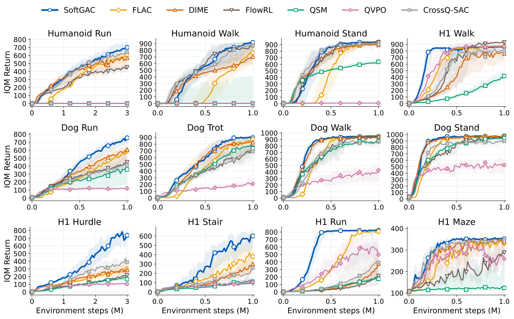
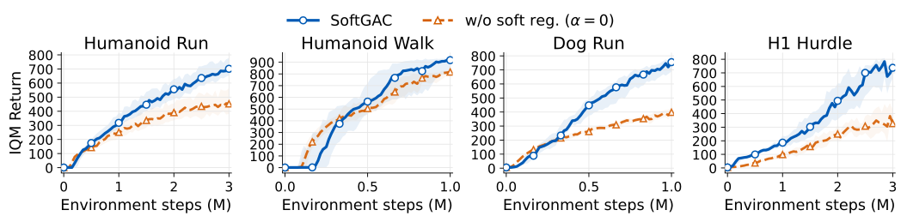

01
Soft
Principled MaxEnt: an analytical path-KL regularizer, endpoint-equivalent to SAC. No entropy estimates, no surrogates.
NeurIPS 2026
One step outside, a soft bridge inside.
1Guangzhou University2Zhejiang University3Southeast University
In one sentence
SoftGAC is a one-step generative actor whose internal Gaussian bridge layers make the maximum-entropy regularizer an exact, analytical path KL. It needs no entropy estimates and no backpropagation through a long sampler, and it beats many-step diffusion and flow actors at a fraction of the inference cost.
01
Principled MaxEnt: an analytical path-KL regularizer, endpoint-equivalent to SAC. No entropy estimates, no surrogates.
02
One network call per action, with about the same parameters as the baselines: ≈1/6 the latency of many-step diffusion.
03
+44% return over the strongest many-step actor on 8 hard Humanoid, Dog and H1 tasks.
Watch
A narrated walkthrough of the idea, the theory and the results. Subtitles are burned in.
Motivation
In many control tasks there is more than one good action. A robot facing an obstacle can go left or right, but not straight. A Gaussian policy has a single peak: to cover both sides, its mean lands in the middle, right into the obstacle. Diffusion and flow policies can model multimodal, highly non-Gaussian action distributions and keep both good options.
The challenge
Many-step diffusion and flow policies are strong, but they call the same network (\(M\) params) \(N\) times for every action, and training backpropagates through all \(N\) calls. One-step generators are fast and cheap, but their returns usually drop.
For any implicit generator, one step or many, the action is a transformed noise sample. Sampling is easy, but the density, and hence the entropy, cannot be computed:
Neither guarantees the true MaxEnt policy (endpoint-equivalence).
Can one policy be truly soft, fast, and better?
Method
SoftGAC is also a one-step generator: about the same number of parameters, and one network call. Inside, the parameter budget is split into \(K\) small Gaussian transition layers (\(\approx M/K\) params each), each used once. Each layer is paired with one step of a fixed maximum-entropy reference process that has no parameters.
Same total budget. Actor params, mean of the 3 domains in Fig. 3: SoftGAC 0.43M, DIME 0.44M.
Sampled, not a deterministic map. \(h=1/K\), and the base is \(z_0\sim q_{\text{ref}}\propto\prod_i\mathrm{sech}^2 z_i\), whose \(\tanh\) image is uniform.
with \(\mu_{\theta,k}=z_k+h\,u_{\theta,k}\) and \(\mu_{R,k}=z_k-2h\tanh z_k\).
Computed in the same forward pass as the action. No density fitting, no entropy bound.
Endpoint entropy is replaced by the control energy, used directly in both updates:
The temperature tracks a control budget \(\mathcal C_{\text{target}}=\rho_{\text{ctrl}}Kd_a\). At deployment, the actor follows its mean bridge path.
Theory
Instead of the intractable action entropy, regularize the whole generation path \(\tau=(z_0,\dots,z_K)\) against the reference process \(R\):
Prop. 1 · The path KL contains SAC's regularizer
Ideal Thm. 1 · Unconstrained base
Endpoint-equivalent With uniform \(u_R\), \(\pi^\star_Q\) is exactly SAC's Boltzmann policy. The path term only shapes how each action is reached.
Practical Thm. 2 & Cor. 1 · Fixed base
A real actor fixes its base \(p_0\) (here \(q_{\text{ref}}\)), so only the transitions are tilted. The base adds a constant, and the gap is bounded:
Prop. 2 · The actor loss is a reverse-KL projection
Each update moves the bridge toward the ideal soft-optimal bridge.
Results
DMC (Humanoid, Dog) and HumanoidBench (H1): 12 tasks, 8 seeds, interquartile mean (IQM) with 95% bootstrap CIs. All actors are re-implemented in one codebase with comparable actor parameter budgets and the same main critic.
+44%
average return over the strongest many-step actor (DIME), with a comparable actor (0.43M vs. 0.44M params)
≈1/6
of DIME's per-action inference latency (66 µs vs. 388 µs)
+24%
average return over the best baseline overall (FLAC)

| Actor | DMC Humanoid | DMC Dog | HumanoidBench |
|---|---|---|---|
| SoftGAC | 61 (410K) | 75 (526K) | 63 (342K) |
| FLAC | 55 (322K) | 61 (419K) | 55 (311K) |
| DIME | 385 (423K) | 393 (471K) | 387 (418K) |
| FlowRL | 55 (322K) | 61 (419K) | 55 (311K) |
| QSM | 183 (614K) | 188 (712K) | 184 (604K) |
| QVPO | 373 (369K) | 387 (466K) | 376 (358K) |
| CrossQ-SAC | 31 (321K) | 37 (419K) | 31 (311K) |
Apple M3 Pro CPU, one action at a time, compilation excluded. SoftGAC evaluates its deterministic mean path.
| Actor | NFE | Params | IQM | Latency | Train |
|---|---|---|---|---|---|
| SoftGAC | 1 | 0.34M | 737 | 63 µs | 6.0 h |
| DACER | 20 | 0.32M | 377 | 400 µs | 7.6 h |
| SDAC | 20 | 0.32M | 60 | 410 µs | 9.3 h |
| MaxEntDP | 20 | 0.40M | 18 | 509 µs | 24.9 h |
Training: one TPU core per seed, median wall-clock at 3M steps.
Rollouts
Every action comes from one network call: 61–75 µs per action on a laptop CPU.
Analysis

Same actor with DACER's GMM endpoint-entropy estimator. Average IQM over Dog Run, H1 Hurdle, H1 Run and H1 Stair (Table 6).
Average IQM over 5 hard tasks (Table 8). The bridge needs neither invertible layers nor Jacobians.
53.8%
of H1 Hurdle states have multimodal SoftGAC actions (Hartigan's Dip test), vs. 0.0% for CrossQ-SAC (Table 5). Robust to the base, the bridge depth (\(K=4\)–\(8\)) and the critic backend (XQC).
@inproceedings{he2026generative,
title = {Generative Actor-Critic with Soft Bridge Policies},
author = {He, Ke and He, Le and Tang, Shunpu and Wang, Yafei and Fan, Lisheng},
booktitle = {Advances in Neural Information Processing Systems ({NeurIPS})},
year = {2026},
url = {https://arxiv.org/abs/2605.08733}
}